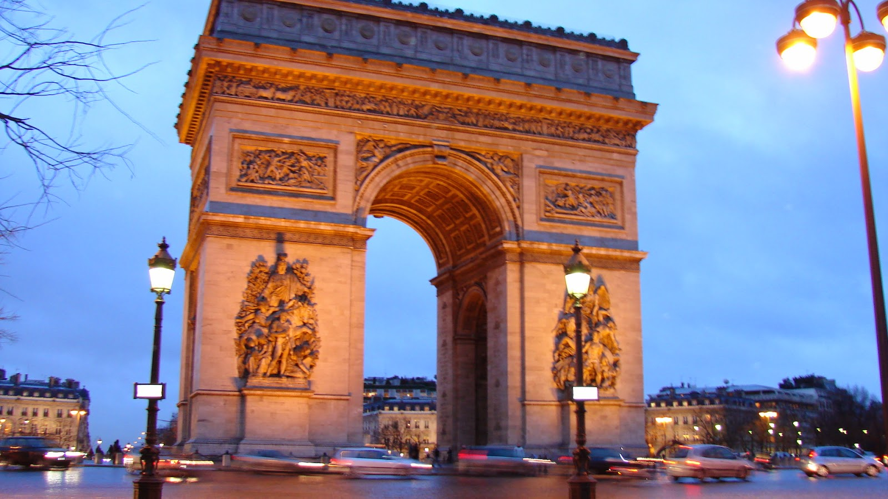
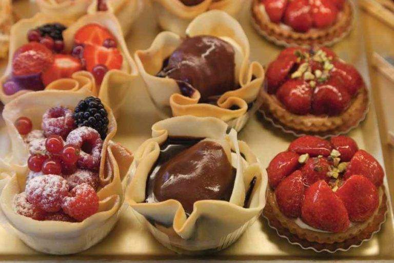
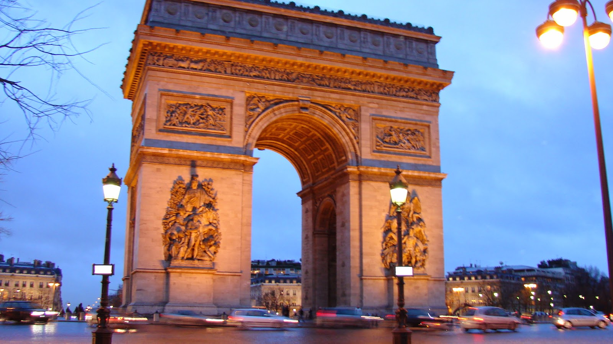
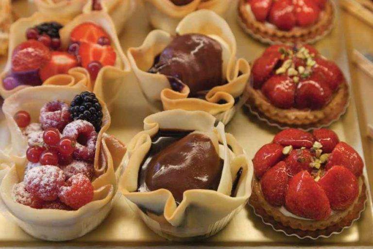

Paris, França
Paris, conhecida como "Cidade Luz", é famosa pela sua arquitetura icônica, culinária deliciosa e arte incomparável.
 



Saiba mais
Roma, Itália
Roma, a capital italiana, é um museu a céu aberto, repleta de monumentos históricos como o Coliseu e o Vaticano.
Saiba mais